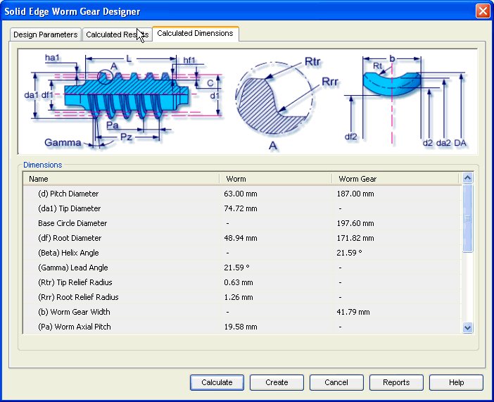

Worm Gear Calculated Dimensions tab
The Calculated Dimensions tab provides the options you use to view additional results of calculation. These results define the parameters to construct the geometry of the worm and worm gear. Hence these are used to build the 3D model of worm and worm gear.

How do I
Worm Gear tutorialLearn more
Worm Gear moduleUsing the Worm Gear module
Worm Gear Design Parameters tab
Worm Gear Calculated Results tab
Worm Gear Material Selection
How to (Worm Gears)
Frequently asked questions (Worm Gears)
Standards used for Worm Gear calculations